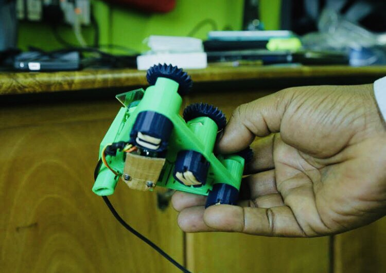

layout: true class: typo, typo-selection --- class: center, middle .north[<br>.right[<img src="imgs/unq.png" width="13%"> <img src="imgs/resized.jpg" width="20%">]<br>] ## Open Science Hardware: "democratizing" <br>science and technology in the periphery?<br> ##### <small><span class="code-highlight">PhD, Science and Technology Studies<span><br>Universidad Nacional de Quilmes<br>March 2021<br></small><br> .left[<span class="oc-bg-teal-3">PhD candidate:</span> Julieta C. Arancio<br> <span class="oc-bg-teal-3">Supervisor:</span> Dra. Valeria Arza<br> <span class="oc-bg-teal-3">Co-supervisor:</span> Dr. Mariano Fressoli] ??? Hola a todes, muchas gracias a todos por estar acá Voy a presentar el trabajo que estuve haciendo en los ultimos cinco años sobre el mov por el hw cientifico abierto, en el marco del doctorado en la UNQ y mi trabajo en el centro de investigaciones para la transformacion, dirigida por Valeria Arza y codirigida por Mariano Fressoli. Lo titule, como dice ahi, fabricaciones desde el dialogo. En esta presentacion voy a intentar contar por que ese titulo. --- background-image:url(imgs/lock.jpg) .abs-layout.p-m.top-10.left-0.width-47.oc-bg-black.opacity-80.oc-teal-3[ <big>Tools for science are, most of the time, <span class="oc-bg-teal-9">proprietary</span></big> ] ??? Este trabajo trata sobre un conjunto creciente de personas que necesitan por diferentes razones producir conocimiento y para los cuales el regimen actual de patentes bloquea la posibilidad de utilizar las herramientas de la ciencia para sus propios fines Se trata de investigadores en contextos de recursos escasos pero también de estudiantes, activistas, comunidades, artistas y educadores, que por eso ewligieron fabricar las propias herramientas y ponen en circulacion sus disenios, utilizando licencias abiertas. Lo pueden hacer a partir de una serie de innovaciones que sucedieron los ultimos 15 años: fabricación digital, herrramientas de prototipado rapido, practicas colaborativas habilitadas por la masificacion del acceso a intenet. --- background-image:url(imgs/gosh2.jpg) .abs-layout.p-m.top-20.left-0.width-47.oc-bg-black.opacity-80.oc-teal-2[ <big>To open science hardware, so <i>"anyone can <span class="oc-bg-teal-9">use it, obtain it, study it, modify it, share it or commercialize it</span>"</i></big><br><br> (GOSH, 2016) ] ??? Estas comunidades de HCA estan viendo un crecimiento acelerado en los ultimos 5 años. En terminos de proyectos, argentina por ejemplo tenemos el ejemplo de TECSCI startup incubada por la unsam que produce hw abierto para investigacion en nanotecnología, está cosensores grupos en exactas de la uba que trabajan con comunidades para evaluar calidad de aguas usando tecnologías abiertas, y el reciente sensores de CO2 que desarrollo el equipo de Aliaga en la univ de hurlingham. Tambien aparecen cada vez mas recomendaciones de politicas, y redes que agrupan a las comunidades El movimiento global por el hw cientifico abierto o GOSH, es proablemente la mas relevante en este espacio, y sobre la que trata este trabajo, nacida en 2016. GOSH basa sus acciones en valores definidos en un manifiesto, donde la diversidad y la democratización de la tech son ejes rectores. --- ## More <span class="oc-bg-violet-2">efficient</span> <br> <i class="ri-terminal-line"></i> economic savings <i class="ri-terminal-line"></i> time savings <i class="ri-terminal-line"></i> less bugs <i class="ri-terminal-line"></i> accelerates innovation <br><br> .right[ ## ...More <span class="oc-bg-teal-2">democratic?</span> ] ??? Los argumentos a favor del HCA pueden agruparse en aquellos que refieren a su mayor eficiencia y a los que argumentan que democratiza la produccion de conocimieto. Este ultimo es menos estudiado y mas difuso, pero plantea que dado su caracter distribuido, el HCA permite que mas gente acceda a las herramientas de la ciencia. Esto incluye entre otros investigadores en paises de pocos recursos y gente fuera de la academia, las herramientas necesarias para producir conocimiento. Es en este punto donde está puesta la atención de este trabajo. A partir de una encuesta y trabajo exploratorio buscamos y estudiamos aquellos casos dentro y fuera de la academia, que son parte del movimiento GOSH en el sur global, donde aparece el potencial democratizante, transformador del hardware cientifico abierto. A partir de estos casos intentamos entender los mecanismos de trabajo, cómo llevaban adelante los procesos y en qué consistían los aspectos democratizantes que sugerían/prometían --- <small>ACADEMIC CASES</small><br><big>**Gorgas tracker**</big> <i class="ri-terminal-line"></i> Universidad Peruana Cayetano Heredia <i class="ri-terminal-line"></i> Customized GPS tracker <i class="ri-terminal-line"></i> Study of malaria dispersion in relation to mobility in indigenous communities in the Peruvian Amazon. <i class="ri-terminal-line"></i> Impact in public policy, creation of HIL .abs-layout.left-50.top-55[ <img src="imgs/gorgas2.png" width="90%"> ] ??? El primer caso se trata del proyecto gorgas tracker, de la upch. Un epidemiólogo y un ingeniero biomédico que Contaban con recursos limitados para desarrollar un proyecto de investigacion. La opcion convencional, un aparato importado, no resisitía las condiciones meteorologicas del amazonas peruano, si se rompia no se podia reparar localmente, y era poco flexible para responder las preguntas de los investigadores. La decision fue tomar el riesgo de construir el aparato dentro de la facultad, en dos etapas: dentro de la facultad con los ing desarrollando y los epidemiologos como usuarias testeando. Luego a campo, testeando con las comunidades indígenas y los agentes de salud que iban a hacer uso del dispositivo. En contacto con el ministerio de salud y el plan malaria cero, los resultados del piloto permitieron incorporar la movilidad humana como uno de los factores relevantes para la política de control de la malaria en Perú. A partir de estos resultados, en 2019 se crea el “Laboratorio de Innovaciónen Salud” en la UPCH, co-dirigido por Carrasco-Escobar y Padilla Huamantinco --- <small>ACADEMIC CASES</small><br><big>**Open Flexure**</big> <i class="ri-terminal-line"></i> UK & Tanzania <i class="ri-terminal-line"></i> University of Bath, ex-STICLab, Ifakara Health Institute <i class="ri-terminal-line"></i> Low-cost, research-grade microscope <i class="ri-terminal-line"></i> Educational versions availabe ("Sayansiscope") <i class="ri-terminal-line"></i> Guarantee local production circuit <img src="imgs/of.png" width="30%"> .abs-layout.left-60.top-40[  ] ??? Siguiendo con los casos académicos, El proyecto “Open Flexure” es una iniciativa de la universidad de bath con el objetivo de hacer que el posicionamiento mecánico de alta precisión sea accesible para cualquier persona que cuente con una impresora 3D. Estos mecanismos se utilizan en distintos artefactos,siendo el más desarrollado y visible hasta el momento el uso en microscopios de alta precisión, util en inv clinica. A partir de un financiamiento del sistema ingles de investigacion, nació la colaboración entre el equipo desarrollador en bath y STICLab, un makerspace en Tanzania. Tanzania tiene muchos problemas de acceso a repuestos y servicio tecnico. El objetivo era fabricar complemetamente el microscopio en el makerspace, a fin de proveer al Instituto de Salud Ifakara, los usuarias, con equipos de alta precisión y bajo costo para diagnosticar malaria. Ese objetivo se logró, acelerando los procesos de diagnostico, y ahora estan en proceso de automatizar ciertas tareas repetitivas para acelerarlo mas. --- <small>COMMUNITY CASES</small><br><big>**Vuela**</big> <i class="ri-terminal-line"></i> Chile & Argentina <i class="ri-terminal-line"></i> Melipilla Community Centre, INTA Balcarce, PROCISUR <i class="ri-terminal-line"></i> Accessible, low-cost open source drones for community science <i class="ri-terminal-line"></i> Focus on co-development, questioning dominant visions in tech .abs-layout.left-10.top-60[ <img src="imgs/vuela5.png" width="50%"> ] .abs-layout.left-75.top-30[ ] .abs-layout.left-60.top-60[ <img src="imgs/vuela.png" width="80%"> ] ??? Dentro de los casos comunitarios, Vuela es un proyecto nacido en el año 2017 en Chile y Argentina con el objetivo de construir drones de código abierto para investigación comunitaria. Vuela tiene dos etapas de trabajo bien marcadas: en un centro vecinal en Melipilla, las afueras de Santiago de Chile, donde se organizaron talleres donde los vecinos comenzaron por replicar un diseño abierto de un drone español. A traves del contacto con investigadores, los vecinos llegaron a formular un problema a trabajar usando el drone. Querían poder volar y filmar la actividad de una cantera cercana que la municipalidad decía que estaba inactiva, pero ellos creían que no. En una segunda etapa, ese nuevo diseño comunitario fue tomado por investigadores academicos para convertirlo en un instrumento cientifico. Así, en 2019 a partir de talleres realizados con investigadores de INTAs de 7 paises latinoamericanos y financiado por prociur, Vuela logró construir y documentar el OVLI (objeto volador libre) en cada lugar, permitiendo contar a los investigadores en agricultura y cambio climatico con drones accesibles, reparables y más sencillos de operar. Más allá del drone como artefacto, Vuela es también un experimento que intenta responder a la pregunta de ¿quién puede producir conocimiento y tecnología? ¿Para qué? --- <small>COMMUNITY CASES</small><br><big>**KossamTor**</big> <i class="ri-terminal-line"></i> Cameroon <i class="ri-terminal-line"></i> Mboa Lab <i class="ri-terminal-line"></i> Low-cost incubators <i class="ri-terminal-line"></i> Yoghurt production for family scale, women in extreme vulnerability .right[ <img src="imgs/kt.png" width="30%"> ] ??? Kossamtor es otro proyecto de origen comuntario en Camerun. Su objetivo es utilizar incubadoras de bajo costo, fabricadas enel makerspace, para que las mujeres de la comunidad rural aledaña puedan producir ycomercializar yogur de forma segura. El nombre del proyecto está compuesto por unacombinación de las palabras Kossam (un tipo de yogur muy popular en Camerún)y el sufijo -tor, por “incubator”. Originalmente la incubadora de bajo costo se fabricó para proveer a las universidades locales de instrumentos que mejoren la educación de los estudiantes. A partir de observaciones de las microbiologas del equipo, se propuso utilizar la incubadora para un proyecto que incluyera a la comunidad de mujeres queviven en la zona aledaña al makerspace. Esto implicó que se realizaran modificacionesen el artefacto y se desarrollen talleres para capacitar a las mujeres en el uso y fabricación del yogur --- class: center, middle ## <span class="oc-bg-violet-1">Making from dialogues</span> ??? En estos casos tan especiales la apertura permitio la participacion de nuevos y mas diversos actores en un dialogo entre usuarias, desarrolladoras y fabricantse de tecnoolia. Y que utilizando tecnicas propias de diseño del hw abierto, este diálogo se materializo en tecnologías altamente contextualizadas, que cambian de acuerdo a como cambie la necesidad, y en construccion de capacidades en los participantes --- # Agenda *** ##### The problem ##### <span class="oc-bg-teal-4">**Research questions**</span> ##### Analytic framework ##### Methodology ##### Results ##### Contributions & limitations ##### Next steps ??? Bueno para contar la cocina... --- class: center, middle #### <small><span class="oc-bg-cyan-7 oc-cyan-1">RQ 1</span></small><br>How does GOSH constitute itself as a strategic innovation niche? <br> #### <small><span class="oc-bg-cyan-7 oc-cyan-1">RQ 2</span></small><br>How do GOSH projects promote the participation of new and more diverse actors in the production of "useful" technology? <br> #### <small><span class="oc-bg-cyan-7 oc-cyan-1">RQ 3</span></small><br> To what extent and how do participants in GOSH projects achieve new capabilities? ??? Para bajar esa pregunta inicial planteamos 3 preg de inv: ¿De qué manera GOSH se constituye como un nicho estratégico de innovación? Esta pregunta intenta contextualizar desde donde se insertan los proyectos, y evaluar el potencial transformador del HCA dentro del régimen actual patentado de herramientas. ¿Cómo los proyectos GOSH promueven la participación de actores nuevos y más diversos en la producción de tecnología y conocimiento “útiles”? Esta pregunta pretende comprender quiénes están participando, para ver si efectivamente los actores son diferentes a los que normalmente encontraríamos diseñando tecnología. ¿En qué medida y cómo los participantes en los proyectos GOSH construyen capacidades? Finalmente esta pregunta va un poco al más allá de la instancia de participación; qué se transforma en los participantes al formar parte de estas iniciativas? --- # Agenda *** ##### The problem ##### Research questions ##### <span class="oc-bg-teal-4">**Analytic framework**</span> ##### Methodology ##### Results ##### Contributions & limitations ##### Next steps ??? --- ## **Analytic framework**<br><br> ####<span class="oc-bg-lime-1">Socio-technical transitions</span> ####<span class="oc-bg-lime-1">Grassroots innovation movements</span> ####<span class="oc-bg-grape-1">Design justice</span> ####<span class="oc-bg-grape-1">Domestication of technology</span> ####<span class="oc-bg-teal-1">Capabilities approach</span> ####<span class="oc-bg-teal-1">Socially useful production</span> ??? la primera pregunta, referida al colectivo, está enmarcada por una combinación de conceptos de la teoría de transiciones sociotécnicas y el enfoque de movimientos de innovación de base. Esto nos permite entender la dinamica del cambio sociotecnico propuesto con un refuerzo de la dimensión política, tan importante en un caso como GOSH. En cuanto a las preguntas 2 y 3, partimos de observar el manifiesto GOSH. Para centrar el analisis desde las usuarias, recurrimos a los enfoques femnistas dentro de los estudios sociales de la tecnología. Esto le da el carácter normativo a esta investigación, nosotros pretendemos observar cómo estos nuevos diseños permiten más participación de gente que normalmente no participa. Observamos como los proyectos GOSH redistribuyen los privilegios de uso y que tipo de trabajos hacen los participantes. Para entender que sucede con los participantes mas alla de los proyectos, recurrimos al enfoque de desarrollo humano y la construccion de capacidades. En particular nos interesa la capacidad de producir conocimiento "util", por lo que recurrimos a algunas categorías de esta literatura también. --- # Agenda *** ##### The problem ##### Research questions ##### Analytic framework ##### <span class="oc-bg-teal-4">**Methodology**</span> ##### Results ##### Contributions & limitations ##### Next steps ??? --- ## **Approach**<br><br> ##<span class="oc-bg-red-1">exploratory, qualitative</span> ##<span class="oc-bg-lime-1">constructivist/relativist</span> ##<span class="oc-bg-grape-1">situated, contingent technologies</span> ##<span class="oc-bg-teal-1">open science</span> ??? Este trabajo aborda es un trabajo exploratorio, abordado de forma cualitativa. Está enmarcado en el relativismo y el construccionismo, paradigmas predominantes en los ECST. Tomamos tecnología en un sentido amplio, como lo artefactos, procesos y formas de organización que forman parte de un entramado sociotecnico. Una config que funciona. La mirada constructivista además plantea la necesidad de situar y hacer explícita la posición de la investigadora en este caso. En mi caso, yo participo del movimiento GOSH y formo parte de proyectos que utilizan hw científico abierto. Para entender desde donde ubicarme yo me inspire bastante en las experiencias de investigación de grupos como el colectivo situaciones, sobre los movimientos nacidos en la crisis de2001, que mencionan la actitud de “estar disponible” como investigador. Tuve la suerte de investigar gosh muy cerca del surgimiento y lo que intente fue acompaniar el crecimiento a partir de facilitar instancias de reflexión, medios de expresión de ideas (como la historia de GOSH), y circular esta info tanto hacia dentro como hacia afuera. Por otro lado, mi propio compromiso con las prácticas de ccia abierto hizo que este trabajo en sí mismo haya sido hecho recurriendo a herramientas de la ccia abierta cuando fue posible. --- <br> <small>RQ 1</small><br> <big>**Studying the collective**</big> <br> <br> ### Participant observation <span class="oc-bg-lime-1">2017-2019</span> ### In-depth interviews <span class="oc-bg-lime-1">2018-2020</span> ### Documentation analysis <span class="oc-bg-lime-1">2017-2020</span> ??? El diseño de la investigacion propone, para la pregunta uno realizar casi un mini estudio de caso del colectivo. Sobre recoleccion de datos, OP, como asistente en 2017, coorganizadora en 2018 y parte de 2019 entrevistas en prof a 13 informantes clave, incluyendo los fundadores, organizadores de eventos y mienmbros clave referidos por estos primeros. análisis de documentos, incluyendo reportes de los eventos, manifiesto, estrategia, posteos en foro, papers, publicaciones en redes sociales Esta pregunta es donde mas se ve el caracter casi lidiando con lo etnográfico. --- <br> <small>RQ 2 & 3</small><br> <big>**Multiple-case studies**</big> <br> #### <br><span class="oc-bg-lime-1">Academic & community cases</span> #### At least one interview <span class="oc-bg-lime-1">per role per project</span> #### Analysis of <span class="oc-bg-lime-1">public docs</span> #### Participant observation <span class="oc-bg-lime-1">whenever possible</span> .abs-layout.left-60.top-50[ <img src="imgs/criterios.png" width="85%">] ??? Comunitario academico es una distincion que proviene de los propios participantes. Los casos se seleccionaron a partir de la realización de una encuesta onine, teniendo en cuenta que pertenecieran a la red de GOSH, que expresaran desde sus objetivos el interés por la democratización, y que fueran iniciativas sostenidas al menos durante un año, donde trabajaran más de dos personas. La idea fue observar casos paradigmáticos que salieran del eje de la mayoría de los proyectos de hw abierto, que siguen haciendo lo mismo pero de forma abierta. Estos son casos que salieron a buscar el diálogo entre usuarias, fabricantes, desarrolladoras. Esto es importante, porque no diría que son la norma ni que son considerados particularmente casos exitosos dentro de GOSH. Pero analizando las prácticas, procesos y obstáculos de estos casos con expectativa democratizante, podemos entender el potencial de GOSH en ese sentido --- class: middle, center <img src="imgs/opensci.png" width="140%"> ??? El analisis incluyo comparativas entre casos inter e intra bloques, codificando el material y organizandolo en plantillas. Por otro lado, la gestión del proyecto de tesis y la documentación, una vez anonimizada, fue subiéndose a github para aumentar la confiabilidad y diseminar las actividades. --- # Agenda *** ##### The problem ##### Research questions ##### Analytic framework ##### Methodology ##### <span class="oc-bg-teal-4">**Results**</span> ##### Contributions & limitations ##### Next steps --- .north.left[<br><span class="oc-bg-lime-2">RQ 1</span><br>How does GOSH constitute itself as a strategic innovation niche?] <br> ### GOSH builds its collective action informed by multiple, sometimes radically different, conceptual frameworks. <br> <i class="ri-terminal-line"></i> open science <i class="ri-terminal-line"></i> environmental justice <i class="ri-terminal-line"></i> hacker culture <i class="ri-terminal-line"></i> critical pedagogies <i class="ri-terminal-line"></i> appropriate technology .abs-layout.left-50.top-50[ ><i class="ri-double-quotes-l"></i><i class="ri-double-quotes-r"></i><br>We are going to bring the question “What is open science hardware to you?” to different cultural locations in the world, and let that question be answered in whatever way it is answered in that place.<br> .right[-- co-founder, 2018] ] ??? GOSH trata de infraestructura, gente muy diversa requiere infra GOSH construye sobre esta diversidad, de diferentes maneras: - ciencia abierta: transparencia, idioma comun y legimidad - actores académicos de alto perfil: la legitimación de sus demandas - mov sociales, particularmente justicia ambiental: metodologías de organización y deliberación - hacktivismo: formación de identidad a partir del trabajo creativo Esto también lo habilita a comunicar esa visión a través de redes amplias y movilizar recursos materiales y no materiales desde esas redes, incluido intercambios muy frecuentes Norte Sur. Una version del capítulo correspondiente acaba de ser publicado en el international journal of eng soc just and peace --- .north.left[<br><span class="oc-bg-lime-2">RQ 1</span><br> How does GOSH constitute itself as a strategic innovation niche?] <br> ## Serious play as a dual strategy: <br>identity + outreach <br> .abs-layout.left-50.top-60[ ><i class="ri-double-quotes-l"></i><i class="ri-double-quotes-r"></i><br>drones are desirable objects [...] <br>they appeal to your inner child." .right[-- Vuela project, 2020] ] ??? En particular me parece relevante que la estrategia de lo lúdico creativo que toma de la cultura hacker le permite a GOSH no solo crear un idioma comun para que toda esta gente tan diferente pueda hablar Tambien le permite ser un movimiento propositivo, que incorpora los valores del manifiesto en productos atractivos En sociedades tecnócratas como las nuestras, esto es un mensaje muy concreto que materializa los cuestionamientos que existen desdde muchos lugares a la tecnología. Los vuelve objetos atractivos que llaman la atención de gente por fuera de la conversación usual sobre los problemas de la tecnología. --- .north.left[<br><span class="oc-bg-lime-2">RQ 1</span><br> How does GOSH constitute itself as a strategic innovation niche?] <br> ## Plurality entails risk of fragmentation .abs-layout.left-50.top-60[ ><i class="ri-double-quotes-l"></i><i class="ri-double-quotes-r"></i><br>The one thing we have in common is that we want the tools of science to be open [...] GOSH is a constant negotiation. .right[-- co-founder, 2018] ] ??? las lecciones de otros movimientos plurales muestran que éstos corren riesgos de fragmentación, en particular a partir de la interacción con las instituciones. Si las prácticas y narrativas dentro de GOSH que se perciben como menos amenazantes del status quo son adoptadas y se dejan de lado aquellas más transformadoras, el movimiento puede fragmentarse generando un nuevo nicho de innovación, más radical --- .north.left[<br><span class="oc-bg-lime-2">RQ 2</span><br> How do GOSH projects promote the participation of new and more diverse actors in the production of "useful" technology?] <br> ## Hybrid academic-activist roles .abs-layout.left-50.top-60[ ><i class="ri-double-quotes-l"></i><i class="ri-double-quotes-r"></i><br>you need people who are moving and sustaining the project all the time, if you don't have someone pedalling all the time, it stops. .right[-- Vuela project, 2018] ] <i class="ri-terminal-line"></i> Facilitators <i class="ri-terminal-line"></i> Translators <i class="ri-terminal-line"></i> Peer-to-peer learning ??? Una de las cosas interesantes es que este diálogo entre usuarias, desarrolladoras y fabricantes es iniciado por personas que dominan el idioma de la academia, pero también hablan en clave de usuaria o fabricante. En algunos casos son ingenieros dentro de universidades, a veces son organizadores comunitarios con contactos con la academia. Pero lo importante es que funcionan de puente, y contribuyen a crear un idioma común Su rol clave está en fomentar la creación de un idioma común, y lo hacen principalmente a través de procesos colaborativos, de formación de pares. --- .north.left[<br><span class="oc-bg-lime-2">RQ 2</span><br> How do GOSH projects promote the participation of new and more diverse actors in the production of "useful" technology?] <br> ## Spaces shape diversity of participants .abs-layout.left-50.top-60[><i class="ri-double-quotes-l"></i><i class="ri-double-quotes-r"></i><br>the technical aspects of this project are male-dominated, masculinised .right[-- KossamTor project, 2020] ] ??? Más allá de los roles, la diversidad tanto de género como de expertise de quienes participa aumentó, en todos los casos, cuando las iniciativas desarrollaron actividades en espacios no académicos como centros vecinales o makerspaces. Otra observación importante es que aunque existen esfuerzos por diversificar la participación, las iniciativas tienden a reproducir los sesgos estructurales de sus contextos --- .north.left[<br><span class="oc-bg-lime-2">RQ 2</span><br> How do GOSH projects promote the participation of new and more diverse actors in the production of "useful" technology?] <br> ## Process-oriented projects / <br> Product-oriented projects <br> <i class="ri-terminal-line"></i> Dialogues by roles / Transversal dialogues <i class="ri-terminal-line"></i> Differential contributions .abs-layout.left-50.top-60[><i class="ri-double-quotes-l"></i><i class="ri-double-quotes-r"></i><br>the most subtle iterations were the ones we got from the field, but they had the biggest impact on the final result .right[-- Gorgas tracker project, 2020] ] ??? Vimos también que más allá del contexto donde se desarrollan estos proyectos, ya sea dentro o fuera de la academia, lo que va a determinar la forma que toma ese diálogo es el objetivo. Lo que los diferencia, en un punto, es el grado de desdibujamiento de los limites del expertise. Cuando el objetivo es obtener un producto, el diálogo se da con los participantes ocupando cada uno un rol: usuaria, desarrollador, fabricantes. De esta forma, eficientemente, la participación permite generar mejores productos. Cuando el objetivo es el proceso de fabricación en sí mismo, el artefacto es casi una excusa, la modalidad es "todos hacemos todo". El foco está en el aprendizaje, en atravesar la experiencia de pasar de ser usuario a ser fabricante. Esto es importante, porque ambos valoran la participación desde lugares diferentes, y evaluar estos proyectos de la misma manera es una limitación. Y algo un poco contraintuitivo, pero mas participacion de todos en todos no implica necesariamente mas beneficios directos para las comunidades (ej kossamtor tiene una diferenciacion bastante rigida usuarias/resto). Pero provee de otros beneficios, a distinta escala temporal, que es necesario valorar. --- .north.left[<br><span class="oc-bg-lime-2">RQ 2</span><br> How do GOSH projects promote the participation of new and more diverse actors in the production of "useful" technology?] <br> ## Documentation reflects <br>the challenges of offline collaboration .abs-layout.left-50.top-50[ ><i class="ri-double-quotes-l"></i><i class="ri-double-quotes-r"></i><br>We worked together, we had common problems to solve [...] what counts as "clean" in optics is different from "clean" for a screw [...] it was very much about developing mutual respect .right[-- Open Flexure project, 2020] ] ??? Quizás uno de los temas más discutidos en las comunidades de hw abierto es como hacer para que la documentacion online esté completa Nosotros pudimos observar que aquellos proyectos con mejor documentacion son los que se enfrentaron a mayores distancias entre colaboradores. Es decir tuvieron que hacer el esfuerzo real de colaborar con un otro, y por ende cuando documentan saben a quien le hablan y los desafíos que se presentan. Las herramientas del sw no son las mas utiles --- .north.left[<br><span class="oc-bg-lime-2">RQ 3</span><br> To what extent and how do participants in GOSH projects achieve new capabilities?] <br> ## Collaborative <br>autonomy <br> <i class="ri-terminal-line"></i> accessible materials & interfaces <i class="ri-terminal-line"></i> repairables <i class="ri-terminal-line"></i> customizable according to different needs .abs-layout.left-50.top-50[ ><i class="ri-double-quotes-l"></i><i class="ri-double-quotes-r"></i><br> I'm much more relaxed flying [the OVLI] [...] if it falls and a leg breaks, I can repair it; I have the confidence for making modifications, to say "I'd like it to be bigger, fly longer, have this or that feature" . .right[-- Vuela project, 2020] ] ??? Creo que aca es importante contar un poco como diseñamos esta pregunta Tomamos un set de capacidades definido para que gente pueda participar del diseño de una tecnología Preguntamos a los participantes acerca de obstáculos en pos de alcanzar esas capacidades Pero no nos limitamos a eso por el caracter exploratorio del estudio, queriamos ver que otras capacidades surgían de ellos La que surgió en todos, fue que a partir de la participación se gana autonomía, en el sentido de aprender a construir con materiales locales, bajos costos, reparables, que cumplan la funcion que yo quiero (mi proyecto de investigacion, mi preg comunitaria, mi proyecto social) --- .north.left[<br><span class="oc-bg-lime-2">RQ 3</span><br> To what extent and how do participants in GOSH projects achieve new capabilities?] <br> ## Knowledge problems that better reflect the social problems to be addressed <br> | Gorgas tracker | Open Flexure | Vuela | KossamTor | |:-:|:-:|:-:|:-:| | Impact | Local production | Collaboration for inclusion | Development | ??? Una cuestión interesante fue entender cómo cada proyecto concebía "lo util". Apelando al paradigma constructivista y el caracter exploratorio del trabajo, lo útil también es un concepto plural y diverso que decidimos abrir - Gorgas: Impacto en la politica publica - Open Flexure: la posibilidad de producir 100% local y de calidad - Vuela: por un lado se construyó un problema de ciencia comunitaria, aunque el proyecto en ese sentido no reportó beneficios directos para la comunidad porque no siguió por ese cauce, e inesperadamente fue retomado por la academia, donde la utilidad se ve en términos de autonomía, soberanía tecnologica - Kossamtor: reorientar un proyecto para atender una necesidad urgente La posibilidad de contextualizar el diseño hizo que en cada caso los participantes pudieran ajustar la tecnologia a los problemas y no al revés. --- .north.left[<br><span class="oc-bg-lime-2">RQ 3</span><br> To what extent and how do participants in GOSH projects achieve new capabilities?] <br> ## Emergence of new research questions <br> <i class="ri-terminal-line"></i> Not favoured by current academic incentives <i class="ri-terminal-line"></i> Un-done science .abs-layout.left-50.top-50[ ><i class="ri-double-quotes-l"></i><i class="ri-double-quotes-r"></i><br>it was the perfect combo to shelve the project [...] an early-career researcher, a relatively complicated topic to pursue, a country where it is not so attractive to do it .right[-- proyecto Gorgas, 2020] ] ??? Esto se vio más en la academia, en particular en el caso de gorgas tracker pero tambien incipientemente en vuela, ciencia no hecha --- .north.left[<br><span class="oc-bg-lime-2">RQ 3</span><br> To what extent and how do participants in GOSH projects achieve new capabilities?] <br> ## Other capabilites <br> <i class="ri-terminal-line"></i> A common language <i class="ri-terminal-line"></i> Sostenibility .abs-layout.left-50.top-50[ ><i class="ri-double-quotes-l"></i><i class="ri-double-quotes-r"></i><br> in addition to manufacturing the equipment, we want to position ourselves as technical service providers .right[-- Open Flexure project, 2020] ] ??? Pero también surgieron otras capacidades, más o menos explicitas. En la academia, permitio que ideas con poco apoyo resulten influyentes en politicas y apertura de nuevas unidades academicas, ademas de mejoras de carrera para su protagonistas En todos los casos la capacidad de colaborar con otros fue muy mencionada En el caso de makerspaces africanos fue muy importante la capacidad de sostener los espacios comunitarios a partir de fabricar y vender artefactos --- .north.left[<br>Conclusions] ## Openness enables dialogues that allow to incorporate <br><span class="oc-bg-lime-2">new and more diverse actors</span><br> to the design and production of technology</span><br> <br> .abs-layout.left-50.top-50[ ><i class="ri-double-quotes-l"></i><i class="ri-double-quotes-r"></i><br> many of the participants who attended [the workshops in Melipilla] were housewives from the Haitian community, young teenagers who were curious, or people who had jobs that had nothing to do with it. .right[-- Vuela project, 2020] ] --- .north.left[<br>Conclusions] ## These alternative visions are embodied in "living", <br><span class="oc-bg-lime-2">highly contextualised</span> technologies</span>. <br> .abs-layout.left-50.top-50[ ><i class="ri-double-quotes-l"></i><i class="ri-double-quotes-r"></i><br>our product has several versions, we have some for educational purposes, some for malaria diagnostics for clinics and research centres. .right[-- Open Flexure project, 2020] ] --- .north.left[<br>Conclusions] ## Depending on the mode of participation,<br> different <span class="oc-bg-lime-2">capabilities</span> were observed .abs-layout.left-50.top-50[ ><i class="ri-double-quotes-l"></i><i class="ri-double-quotes-r"></i><br>many times when we try to look for solutions, we are limited to the supply available on the market [...] a market that is not designed for our countries. .right[-- Gorgas tracker project, 2020] ] ??? Como conclusioń, podemos decir que en terminos de democratizacion estos casos muestran que la apertura habilitó la incorporacion de visiones alternativas a las dominantes, al proceso de disenio de tecnoogias Estas tecnologías que son reflejo de la configuración de necesidades, visiones, valores y recursos que atraviesan a los participantes y por lo tanto hay multiples versiones de cada una. Y mas alla de los artefactos, las personas tambien son transformadas por la experiencia de participar. Estas conclusiones van en linea con lo que el pensador latinoamericano arturo escobar llama disenios para el "pluriverso", o el mundo donde entran muchos mundos: el desafio a la dominancia de una sola manera de construir tecnologias, a traves de inscribir nuevas y múltiples formas de habitar el mundo en los artefactos. --- # Agenda *** ##### The problem ##### Research questions ##### Analytic framework ##### Methodology ##### Results ##### <span class="oc-bg-teal-4">**Contributions & limitations**</span> ##### Next steps ??? --- # Contributions <i class="ri-terminal-line"></i> <span class="oc-bg-grape-1">Empirical:</span> [GOSH map](https://github.com/thessaly/goshmap), [GOSH history](https://openhardware.science/about/gosh-history/), global south projects baseline. <i class="ri-terminal-line"></i> <span class="oc-bg-grape-1">Methodological:</span> experiment of Open Science applied to STS <i class="ri-terminal-line"></i> <span class="oc-bg-grape-1">Theoretical:</span> triangulation of GIM, feminist and technology domestication analysis # Limitations <i class="ri-terminal-line"></i> Participant observation: <span class="oc-bg-teal-1">suspended, COVID-19</span> <i class="ri-terminal-line"></i> <span class="oc-bg-teal-1">Exploratory</span> approach of capabilities analysis --- # Agenda *** ##### The problem ##### Research questions ##### Analytic framework ##### Methodology ##### Results ##### Contributions & limitations ##### <span class="oc-bg-teal-4">**Next steps**</span> ??? --- # Implications ####<span class="oc-bg-red-1">For practice</span> <i class="ri-terminal-line"></i> Diversity of practice, measuring success ####<span class="oc-bg-lime-1">For policy</span> <i class="ri-terminal-line"></i> OSH as a tranversal axis in STI policy, multiple spaces<br> <i class="ri-terminal-line"></i> Product-oriented collaborations ####<span class="oc-bg-grape-1">For research</span> <i class="ri-terminal-line"></i> Institutional factors limiting OSH<br><i class="ri-terminal-line"></i> North/South patterns ??? Prácticas - Factores que determinan diversidad, evaluacion de proyectos - Factores que influyen en documetnacion de calidad - Atencion a la posibilidad de fragmentacion Políticas - Integrar OSH como eje transversal - Conexion entre comunidades apertura ciencia Investigación - mejor evaluacion de capacidades en particular en cada rol - explorar factores que favorecen este tipo de OSH - diferencias norte sur --- # Implications for practitioners (I) <!-- ####<span class="oc-bg-grape-1">For GOSH</span> <i class="ri-terminal-line"></i> Fragmentation risk of institutional interface <br> <i class="ri-terminal-line"></i> Lessons learned for regional movement-building --> <br> ##### OSH projects have different aims, and it's OK <span style="color:white;">.....</span><i class="ri-terminal-line"></i> We need contextualised metrics, for process-oriented and product-oriented projects <br> <br> <span style="color:white;">.....</span><i class="ri-terminal-line"></i> Capabilities approach could be a suitable success criteria for process-oriented projects/impact analysis <br> <br> <span style="color:white;">.....</span><i class="ri-terminal-line"></i> In the south, OSH is an impactful tool for developing autonomy-related capabilities and development goals <br> <br> <span style="color:white;">.....</span><i class="ri-terminal-line"></i> Centering on capabilities makes us see openness as a means, not an end <br> <br> <span style="color:white;">.....</span><i class="ri-terminal-line"></i> Both types could be integrated for further, long-term impact (building local capabilities, seeds for innovation) ??? --- # Implications for practitioners (II) <br> ##### Diversity: distance between global discourse and project/regional practice <span style="color:white;">.....</span><i class="ri-terminal-line"></i> Spaces are the key for opening up participation: where are your activities taking place? <br> <br> <span style="color:white;">.....</span><i class="ri-terminal-line"></i> Software collaboration tools exclude participants from different backgrounds, meet people where they are <br> <br> <span style="color:white;">.....</span><i class="ri-terminal-line"></i> Women build impactful knowledge problems, but they are not included in decision-making. <br> <br> <span style="color:white;">.....</span><i class="ri-terminal-line"></i> Documentation is a genderized activity, usually taken up by women/trans: actively intervene ??? --- # Implications for practitioners (III) ##### Documentation: docs reflect your offline collaboration process <span style="color:white;">.....</span><i class="ri-terminal-line"></i> Epistemic distance forces you to have better docs: work on them with different people <br> <br> <span style="color:white;">.....</span><i class="ri-terminal-line"></i> Identify, nurture and promote your project's hybrid roles - they lead the peer2peer learning processes <br> ##### Sustainability <span style="color:white;">.....</span><i class="ri-terminal-line"></i> If product-oriented project, incorporate participants with manufacturing expertise as early as possible <br> <br> <span style="color:white;">.....</span><i class="ri-terminal-line"></i> Projects still ongoing were intentional on their sustainability strategy from the very beginning <br> <br> <span style="color:white;">.....</span><i class="ri-terminal-line"></i> Project still ongoing diversified their funding source: academia + dev grants ??? --- # Postdoc project: Open Flexure case study (2021-2023) <i class="ri-terminal-line"></i> Goal: To understand how open science hardware (OSH) practices can contribute to the transformation of knowledge production processes in academia, and which factors condition that potential. <br> <br> <i class="ri-terminal-line"></i> Specific goals, to understand:<br> <span style="color:white;">.....</span>a) how OSH can contribute to the emergence of new areas of inquiry by disrupting established power structures at different levels in academia, <br> <span style="color:white;">.....</span>b) how academic rules and structures can foster or hinder OSH expansion, <br> <span style="color:white;">.....</span>c) how OSH can contribute to increased knowledge production in low-resource contexts. <br> <br> <i class="ri-terminal-line"></i>Outputs:<br> <span style="color:white;">.....</span>a) at least 2, ideally 3 peer-reviewed publications <br> <span style="color:white;">.....</span>b) policy brief for concrete adoption of OSH by TTOs <br> <span style="color:white;">.....</span>c) network of researchers on social aspects of OSH .abs-layout.left-60.top-80[ <img src="imgs/sloan.png" width="50%"> ] .abs-layout.left-85.top-80[ ] ??? --- class: center, middle <!-- .north[<br><br><img src="imgs/unq.png" width="16%"> <img src="imgs/resized.jpg" width="25%"><br><br><br>] --> <br><br><br><br><br><br> #### <big><span class="oc-bg-teal-4">**Thank you!**</span></big> <br><br><br><br><br> .right[<i class="ri-global-fill"></i> julieta.aranc.io <!-- <br><i class="ri-mail-fill"></i> jarancio@unsam.edu.ar --> <br><i class="ri-twitter-fill"></i> @cassandreces]